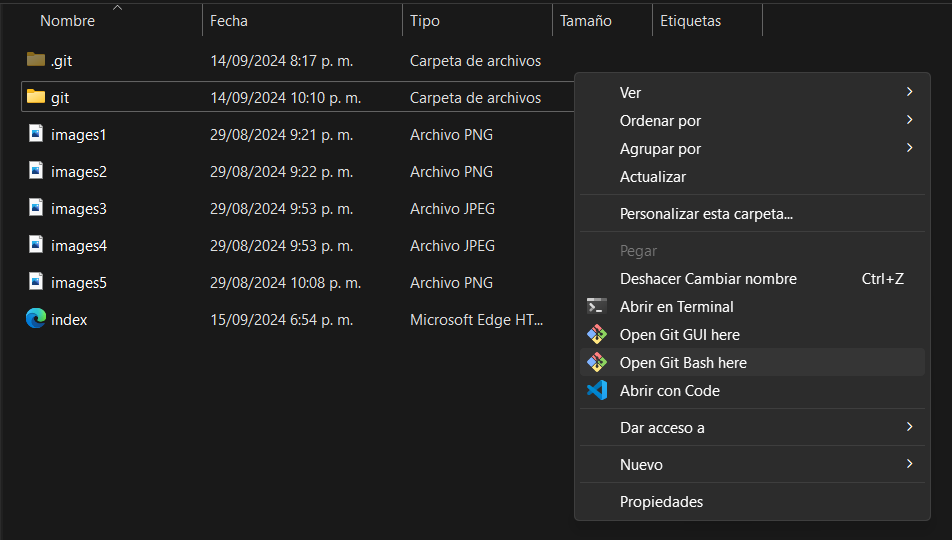
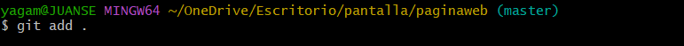
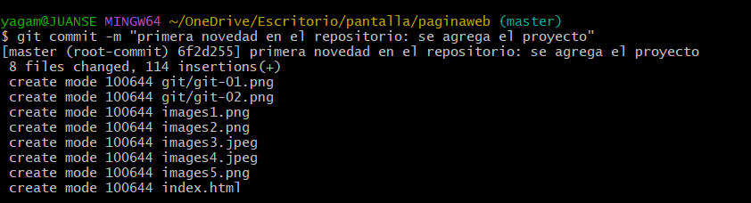
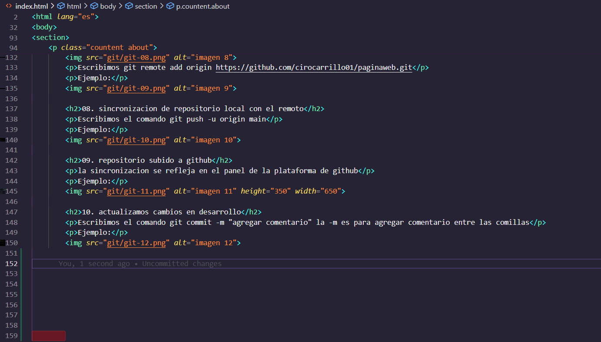
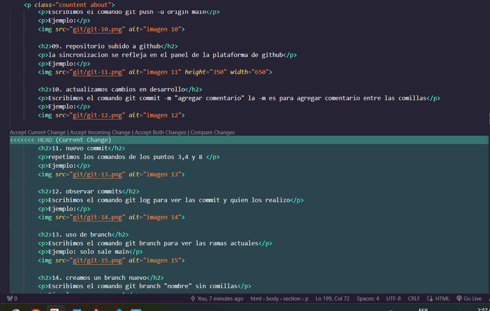
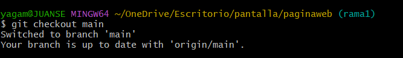
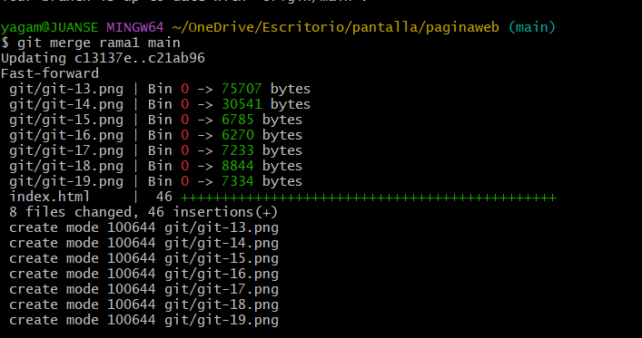
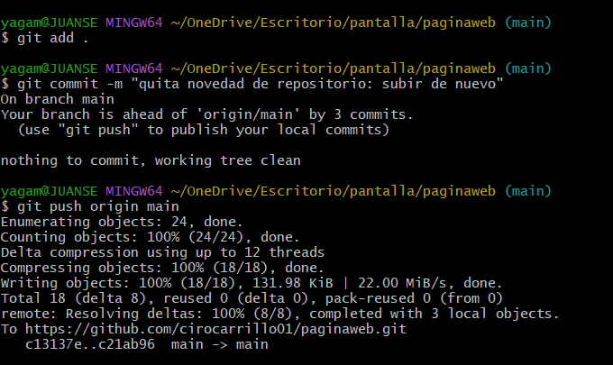
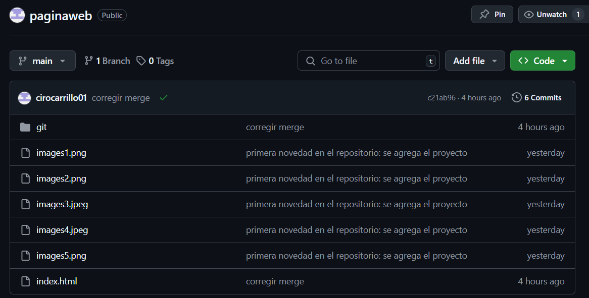
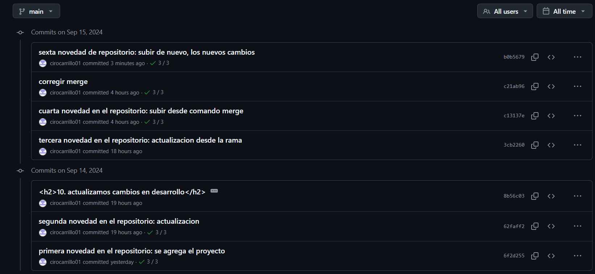

Soy ciro antonio carrillo mendoza, estudiante de ingenieria de software y datos, provengo de norte de santander
Blog
¿que es un Transistor?
Un transistor es un dispositivo semiconductor que actúa como un amplificador, conmutador, oscilador o rectificador de señales eléctricas.
Es uno de los componentes electrónicos más fundamentales y versátiles, formando la base de la mayoría de los circuitos electrónicos modernos.!

¿como funciona un transistor?
Un transistor está compuesto por tres regiones de semiconductor: el emisor, la base y el colector.
La forma en que estas regiones están conectadas determina el tipo de transistor (NPN o PNP) y su comportamiento.

La corriente que fluye a través de la base controla la corriente que fluye entre el colector y el emisor.
Esto permite amplificar una señal débil o conmutar una corriente más grande.
Tipos de transistores
Existen varios tipos de transistores, cada uno con características y aplicaciones específicas:
+ Transistores bipolares (BJT): Los más comunes, utilizan dos uniones PN para controlar la corriente.
+ Transistores de efecto de campo (FET): Controlan la corriente mediante un campo eléctrico.
+ MOS: Un tipo de FET muy utilizado en circuitos integrados.
Aplicaciones de los transistores
Los transistores tienen una amplia gama de aplicaciones, incluyendo:
+ Amplificadores: Aumentan la potencia o amplitud de una señal.
+ Conmutadores: Controlan el flujo de corriente para encender y apagar dispositivos.
+ Osciladores: Generan señales de frecuencia específica.
+ Circuitos integrados: Forman parte de millones de transistores que componen microprocesadores, memorias y otros circuitos.
Ventajas de los transistores
+ Tamaño pequeño: Los transistores son muy pequeños, lo que permite crear circuitos integrados compactos y potentes.
+ Bajo consumo de energía: Operan con muy poca energía, lo que los hace ideales para dispositivos portátiles.
+ Fiabilidad: Son dispositivos muy robustos y duraderos.
+ Versatilidad: Pueden realizar una amplia variedad de funciones en circuitos electrónicos.
TUTORIAL GIT
00. Iniciar Git desde el archivo
le damos click derecho y selecionamos open git bash here
Ejemplo:

01. Iniciar Git
Escribimos el comando git init en Git Bash para crear repositorio
Ejemplo:

02. verificar el contenido a subir
Escribimos el comando git status para verificar lo que vamos a subir
Ejemplo:
03. subir el contenido
Escribimos el comando git add + . (en espacios) para subirlo todo
Ejemplo:

04. subir el repositorio
Escribimos el comando git commit -m "agregar comentario" la -m es para agregar comentario entre las comillas
Ejemplo: el comando es correcto, pero esto sucede si no se a configurado el git

05. configuramos git para subir repositorio
configuramos el usuario email con el comando git config --global user.email "se agrega el correo aqui"
Ejemplo: añadimos el email
configuramos el usuario nombre con el comando git config --global user.name "se agrega el nombre aqui"
Ejemplo: añadimos el name
06. subir el repositorio nuevamente
Escribimos el comando git commit -m "agregar comentario" la -m es para agregar comentario entre las comillas, se sube todos los archivos pero queda alojado en el repositorio local
Ejemplo:

07. subir al repositorio remoto
Escribimos el comando git branch -M main
Ejemplo:
Escribimos git remote add origin https://github.com/cirocarrillo01/paginaweb.git
Ejemplo:
08. sincronizacion de repositorio local con el remoto
Escribimos el comando git push -u origin main
Ejemplo:
09. repositorio subido a github
la sincronizacion se refleja en el panel de la plataforma de github
Ejemplo:
10. actualizamos cambios en desarrollo
Escribimos el comando git commit -m "agregar comentario" la -m es para agregar comentario entre las comillas
Ejemplo:

11. nuevo commit
repetimos los comandos de los puntos 3,4 y 8
Ejemplo:

12. observar commits
Escribimos el comando git log para ver las commit y quien los realizo
Ejemplo:
13. uso de branch
Escribimos el comando git branch para ver las ramas actuales
Ejemplo: solo sale main
14. creamos un branch nuevo
Escribimos el comando git branch "nombre" sin comillas
Ejemplo: se crea rama1
15. observar los branch disponibles
Escribimos el comando git branch para ver las ramas actuales nuevamente
Ejemplo:salen los dos para seleccionar
16. cambiar al branch nuevo
Escribimos el comando git checkout "nombre del branch" sin comillas
Ejemplo:
17. observamos el cambio
Escribimos el comando git branch y verificamos el cambio a la rama
Ejemplo:

18. como trabajar desde branch
Escribimos el comando git branch "nombre" sin comillas, para trabajar desde esa nueva rama y hacer configuraciones
Ejemplo: vista de la rama main y su contenido que se tiene en ella

19. trabajar desde branch rama1
Escribimos nuestros cambios y modificaciones desde esta rama
Ejemplo: lo que esta en verde esta en la rama 1 y solo se puede ver si esta parado sobre ella

20. antes de crear un merge
Escribimos el comando git checkout main, para cambiar a la rama principal no se puede hacer
merge desde en una rama que no sea la principal donde se va alojar los cambios
Ejemplo:

21. para crear un merge
Escribimos el comando git merge rama1 main en este orden desde la rama main, selecionada anterior mente
Ejemplo:

22. nuevo commit para sincronizar con el repositorio
Repetimos los comandos de los puntos 3,4 y 8
Ejemplo:

23. revisar el repositorio en github
Ringresamos a github para ver los cambios si fueron hechos
Ejemplo:

24. nuevo commit para sincronizar con el repositorio
Repetimos los comandos de los puntos 3,4 y 8
Ejemplo:
